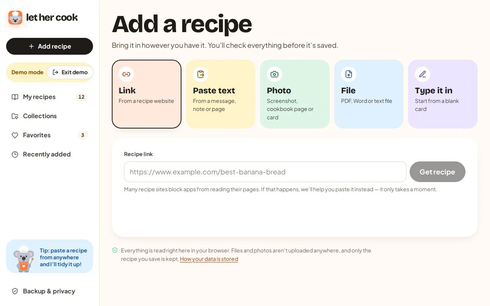

Peach & Burrata Summer SaladIngredients
Serves4
Cooking · Peach & Burrata Summer SaladStep 1 of 4
Screen stays awake4
✓
✓Saved to your cookbook

No ads, no subscriptions, nothing locked away, and your recipes never leave your device. If it helps get dinner on the table, you can buy Walla a eucalyptus leaf.
This is the real app, running right here. Tap around like you would on your phone.